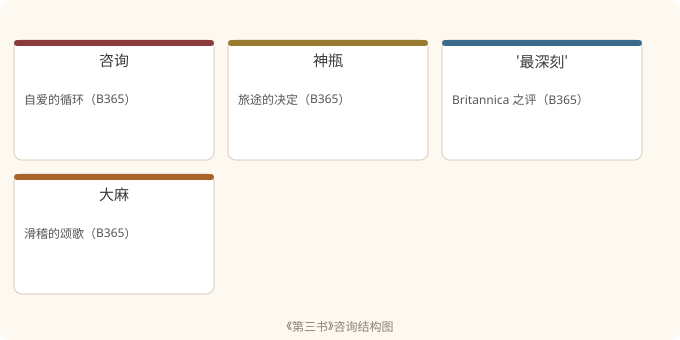

第三书
一、基本信息
| 作者 | 弗朗索瓦·拉伯雷 |
|---|---|
| 成书/出版 | 1546年（Britannica B365：Tiers livre (1546)——'Rabelais's most profound work'） Francois Rabelais — Encyclopaedia Britannica（百科全书） |
| 国别/地区 | 法国 |
| 时代 | 古代 · 16世纪40年代 |
| 体裁 | 长篇小说 |
| 语言 | 法语 |

《第三书》咨询结构图（主题·结构图）
二、创作背景
Britannica（B365）：Tiers livre——'Rabelais's most profound work'——Pantagruel 'has now deepened into a Stoico-Christian inerrant sage'；Panurge 'a lover of self and deluded by the devil, is now an adept at making black seem white'。
Britannica（B365）：献给纳瓦拉王后玛格丽特——旋即被索邦斥为异端——逃亡梅斯（B365）。
Britannica（B365）：'ends enigmatically with a mock eulogy in which hemp is praised for its myriad uses'。
三、内容脉络
Panurge 的婚姻咨询：神学家/医生/怀疑论者/掷签（B365：He consults...all to no effect because of his self-love）。
'神瓶'之旅的决定与'大麻'的颂歌收尾（B365）。
四、主要人物表
| 人物 | 身份 | 说明 |
|---|---|---|
| 庞大固埃 | '斯多葛-基督教'的圣人（B365） | B365：Stoico-Christian inerrant sage |
| 巴汝奇 | 自爱的咨询者 | （B365：a lover of self...making black seem white） |
五、主题与艺术特点
- '自爱'的咨询循环（B365：because of his self-love）。
- '最深刻的作品'（B365：most profound work）。
- '大麻'的滑稽颂（B365：mock eulogy）。
六、影响与评论
- Britannica：'Rabelais's most profound work'（B365）。
Francois Rabelais — Encyclopaedia Britannica（百科全书） - Britannica：索邦斥为异端与逃亡（B365 交叉）。
Francois Rabelais — Encyclopaedia Britannica（百科全书）
七、阅读建议
难点
- 咨询结构的多声部。
- 斯多葛-基督教语汇（B365）。
- 《第三书》中译名（《巨人传》第三部——通说待核）。
- 法文原版（公有领域）。
《巨人传》第三部；接《第四书》。
八、待核实
- '神瓶'咨询细节核对（B365已载梗概）。
- 1546年出版（royal privilège说）待核。
- '大麻'收尾的解读待核。